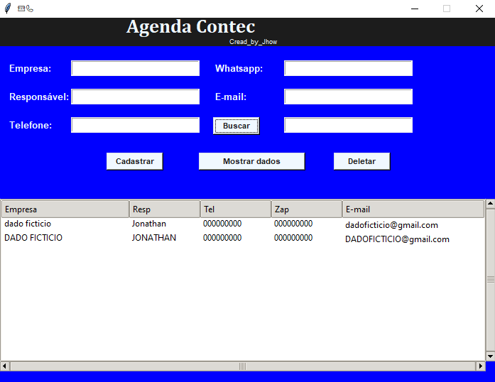
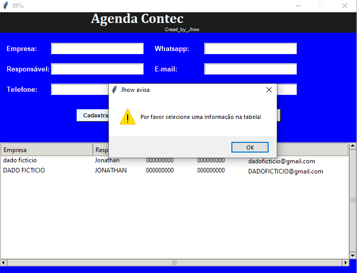
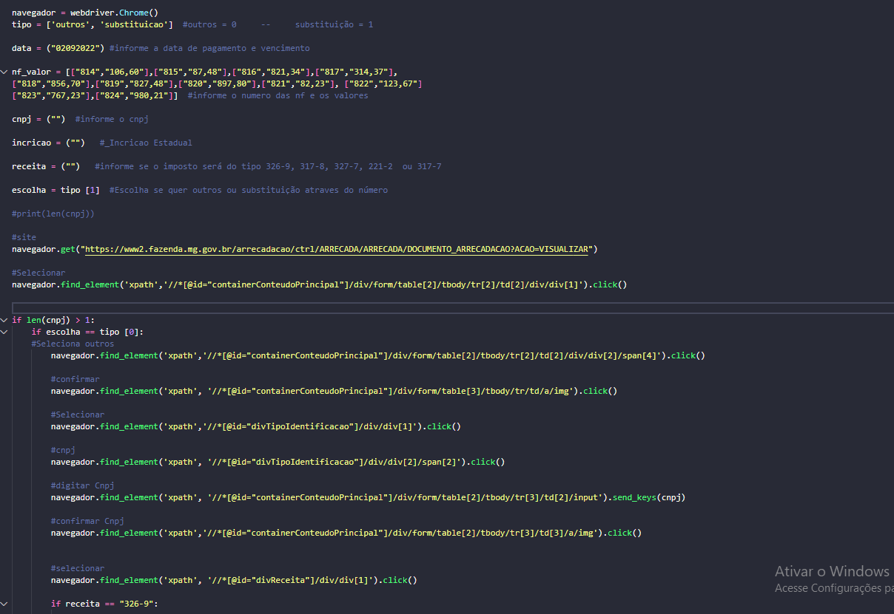
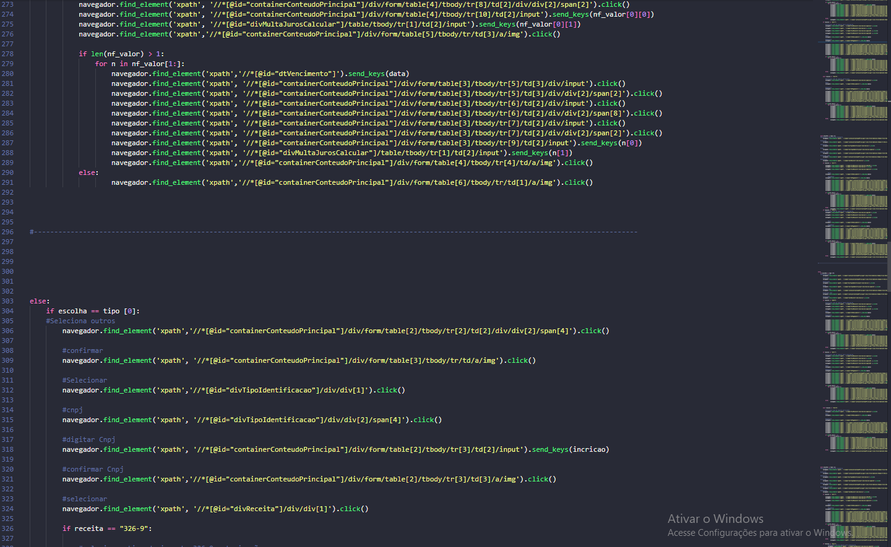
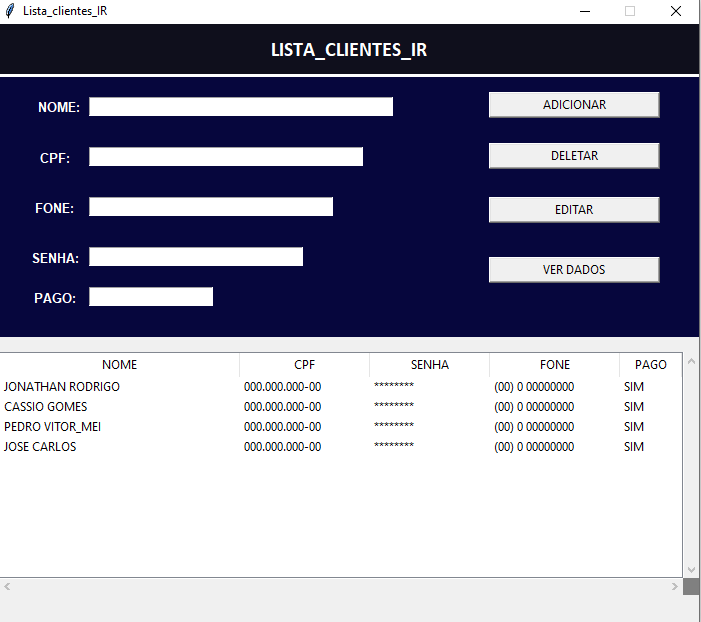
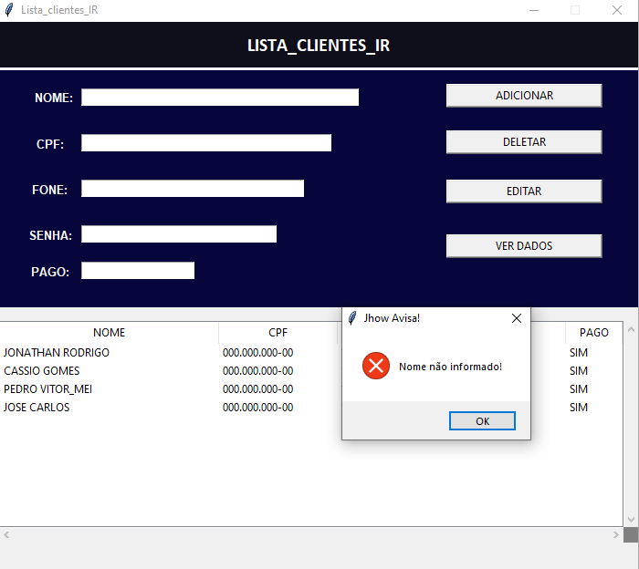
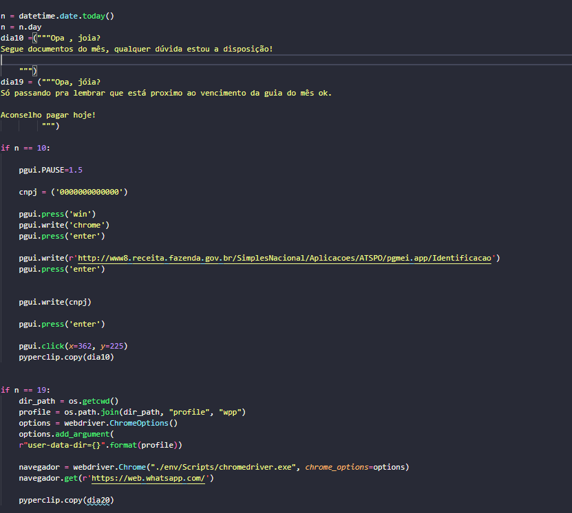
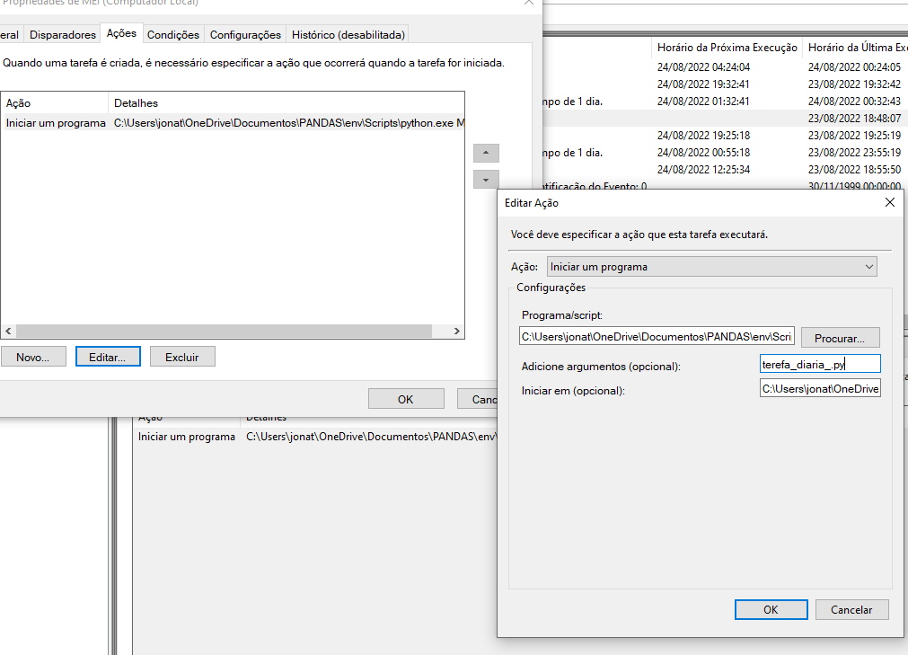

Certificações
- STAART CAIXA DE FERRAMENTAS DA TECNOLOGIA
- UDEMY ANÁLISE FUNDAMENTALISTA NA PRATICA
- UDEMY RECEBA DIVIDENDO ETERNAMENTE
- FECON COMO CLASSIFICAR DESPESAS
- STAART SUA ESTRADA P TECNOLOGIA
- STAART CRIANDO APP LOW CODE
- STAART FRONT END DO ZERO
- STAART MICROSOFT 365
- STAART HTML e CSS
- STAART JAVASCRIPT
Javascrip
SOBRE
Mindeset
Falando um pouco sobre mim, sou um jovem que sempre foi dedicado, entendo bem que as vezes somos criticados para nós tornamos melhores, pessoas tendem a achar que a critica indica um falha nelas e por isso acabam desistindo de muitas coisas, eu ao contrario desse pensamento sempre fui um jovem que não gosta de perde, sendo assim quando recebia uma critica sobre uma habilidade minha que eu julgava ser importante, eu me dedicava para que não recebesse a mesma crítica futuramente. Gosto de ser desafiado e lidar com coisas que não entendo, fico entediado com o mesmismo e não sou fan de ficar parado sem aprender, eu necessito de sentir que antes de dormi estou no minímo 1% mais esperto que antes, tendo isso em mente busco trabalhar com pessoas incriveis e aprender diversas coisas novas, fico fascinado imaginando o quanto posso aprender com as pessoas incriveis que existem nesse mundo.
Comunicação
Tenho facilidade em me comunicar com pessoas, além disso gosto bastante de ensinar o que eu sei, acredito fortemente no ditado "Ensinar é aprender de novo", também não vejo propblema em trabalhar em equipe pelo contrario eu adoro ter alguém para desvendar um novo mistério, sou bastante competitivo então ter companhia tende a me motivar a ser melhor. Más mesmo sozinho sou bastante disciplinado e aplicado.
Diferencial
Com minha vivencia no mercado de trabalho começei a acreditar fortemente que minha maior qualidade e também meu maior diferencial é o fato de que sei aprender muito bem com as críticas, diferente de muitos que tendem a ficar com raiva, mal humor ou repudio da pessoal que proferiu a crítica. Outro diferencial é minha seriedade com o compromisso, não sou do tipo que reclama quando a empresa disponiliza um curso, muito pelo contrario eu fico extremamente feliz, pois é uma forma de aprender a qual não terei custeio nenhum, sinceramente tenho certa dificuldade em entender o porque das pessoas reclamarem de cursos disponibilizados pela empresa, falo isso pois é uma realidade com a qual já me deparei.
PROJETOS
1º Projeto
Meu primeiro projeto como programador foi na linguaguem Python sendo ela uma das minhas linguaguens favoritas, o projeto se trata de uma agenda que fiz para o meu serviço, ninguém me disse para fazer porém vi que a empresa ultilizava agenda no modelo fisico sendo isso motivo de varias confuções pois só existia uma, além disso ela tinha problemas com atualização pois ninguém queria ser o responsável por tal tarefa, pensando nisso resolvi criar uma agenda virtual para facilitar a vida de todos na empresa, sendo agora muito simples adicionar um cliente e todos tem acesso de seu proprio computador. Na criação da agenda utilizei da bliblioteca tkinter que vem por padrão no Python, e como banco de dados ultilizei um arquivo csv, para a manipulação do arquivo csv usei a bliblioteca csv por sua simplicidade no uso.
 
2º Projeto
Meu segundo projeto como programador foi um codigo que não exigia interface pois seria ultilizado somente por mim mesmo, após aprender a programar queria me testar e está sempre programando, más infelizmente como ainda não trabalho na area essa não é uma realizade, porém eu fico feliz toda vez que posso programar algo, com essa vontade de programar em mente percebir que um imposto chamado DAE "DOCUMENTO DE ARRECADAÇÃO ESTADUAL" era frequentemente feito com o CNPJ errado, isso sempre era percebido bem antes de ir ao cliente final, porém isso significava que teriamos que regerar aquela guia do absoluto 0 e diferente de muitos impostos esse é particulamente chato de ser feito exclusivamente o de algumas empresas devido a quantidade de notas que devem ser lançadas, com isso em mente fiz um codigo onde você informa os dados da guia e ele faz o resto por você, dessa maneira caso você erre um dado, pode simplismente troca-lo e execultar o codigo novamente sem perde quaisquer dados, e o principal você informando os dados não precisa temer uma queda de internet ou travamento do site, ou qualquer outro tipo de erro que poderia lhe fazer perde o progresso!
É um codigo bem grande devido a quantidade de maneiras que o imposto pode ser gerado, porém apesar do tamanho é bem simples.
 
3º Projeto
Após termina a agenda anterior resolvir fazer uma para minha organização pessoal,
porém dessa vez para ser um desafio justo usei uma bliblioteca diferente para a manipulação do csv,
nessa agenda usei o Pandas
uma bliblioteca bem famosa na area de manipulação de dados em Python, foi realmente bem desafiador pois
quase não se encontra conteudo
sobre a bliblioteca no youtube o que me garantiu uma experiência com a documentação do Pandas, pois
passei horas tentando entender algumas
funcionalidades, e bom é assim que deve ser não há nada melhor que o sentimento de terminar uma tarefa
desafiadora, acho que muitos escolhemos
programar por essa razão o desafio de aprender algo completamente novo.
Apesar de no inicio parecer impossível, acabou dando tudo certo e conseguir criar minha agenda com
Pandas, foi certamente uma experiencia muito
enriquecedora, pois tive também a oportunidade de trabalhar com o Jupyter o que me fez descobrir que
poderia usa-lo no Vs code, para torna a
experiencia um pouco mais interessante fiz algumas mudanças na entrada dos dados dessa agenda.
Essa agenda por padrão recebe o nome como maiusculo sendo assim ficando todos os nomes dentro de um
mesmo padão, o cpf informando já vem com os pontos
e hifens nos respectivos locais e o mesmo para telefones já vem com areá para dd, fiz essas mudanças
vizando uma melhor organização na exibição dos dados.
 
4º Projeto
Recentemente fiz um codigo que execulta uma ação especifica todo dia 10 e dia 19, fiz isso vizando automatizar tarefas que são feitas todos os meses nos respectivos dias, para isso usei o Pyautogui junto do Selenium para a automação da tarefa e usei o agendador de tarefas para torna a execulção do codigo diaria!
 